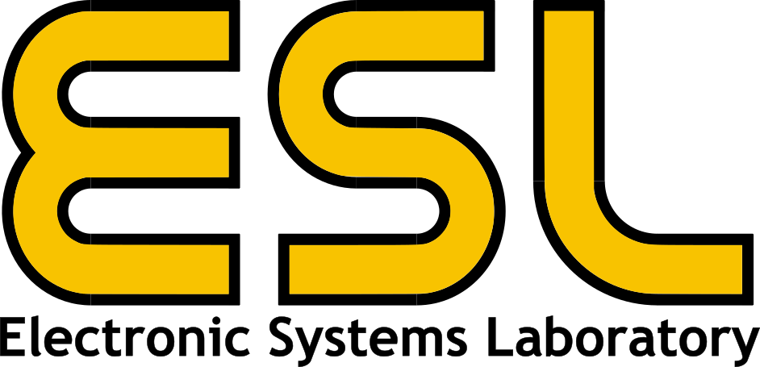

Safe Reinforcement Learning Using a Predictive Safety Filter for Obstacle Avoidance in Autonomous Racing
4:18 · 1080p
Summary
Reinforcement learning can learn high-performance control, but it cannot by itself guarantee that a system's constraints are satisfied. This work develops a PPO racing policy for the 1:10 scale RoboRacer vehicle and a predictive safety filter that corrects any unsafe command the policy proposes.
The policy is trained in a high-fidelity simulator that models the actuators, tyres, sensor timing, computational delay and noise, and is deployed on the vehicle without further training, using only onboard localisation. Further training on tracks with randomly placed obstacles raises the share of 500 unseen obstacle layouts it completes from 39 % to 94 %.
The remaining crashes show that learning alone is not enough. The safety filter tracks obstacles from onboard LiDAR and, before a command is applied, verifies that the vehicle can still pass the obstacle at a reduced speed, or stop, without a collision. If it cannot, the filter corrects the command.
Results
| Policy alone | With safety filter | |
|---|---|---|
| Simulation, 500 unseen obstacle layouts | 94 % completed | 99.8 % completed |
| Real vehicle, four obstacle layouts | crashed on 2 of 4 | 113 obstacle passes without a collision |
| Onboard computation (Jetson Orin) | whole control computation under 20 ms | |
| Commands changed around obstacles (vehicle) | 11 to 22 % | |
| Lap-time cost on the empty track (vehicle) | at most 0.43 s per lap | |
Citation
@mastersthesis{maertin2026psf,
author = {M{\"a}rtin, Nico},
title = {Safe Reinforcement Learning Using a Predictive Safety Filter for Obstacle Avoidance in Autonomous Racing},
school = {Stellenbosch University},
year = {2026},
month = nov,
url = {https://github.com/ocinnitram/psf-roboracer}
}